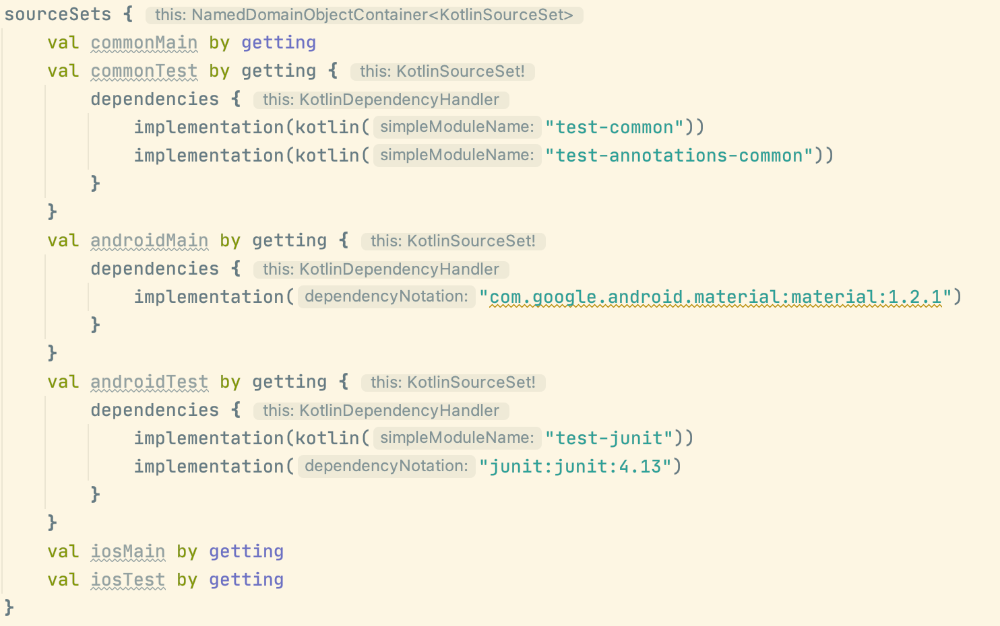

Support for multiplatform programming is one of Kotlin's key benefits. It reduces time spent writing and maintaining the same code for different platforms while retaining the flexibility and benefits of native programming.
This is how Kotlin Multiplatform structure looks like:
Common Kotlin includes the language, core libraries, and basic tools. Code written in common Kotlin works everywhere on all platforms.
- To interop with platforms, use platform-specific versions of Kotlin. Platform-specific versions of Kotlin (Kotlin/JVM, Kotlin/JS, Kotlin/Native) include extensions to the Kotlin language, and platform-specific libraries and tools.
- Through these platforms you can access the platform native code (JVM, JS, and Native) and leverage all native capabilities.
- With Kotlin Multiplatform libraries, you can reuse the multiplatform logic in common and platform-specific code. Common code can rely on a set of libraries that cover everyday tasks such as HTTP, serialization,managing coroutines, .
If you need to access platform-specific APIs from the shared code, use the Kotlin mechanism of expected and actual declarations.
With this mechanism, a common source set defines an expected declaration, and platform source sets must provide the actual declaration that corresponds to the expected declaration. This works for most Kotlin declarations, such as functions, classes, interfaces, enumerations, properties, and annotations.
Before you begin creating your first application to work on both iOS and Android, start by setting up an environment for Kotlin Multiplatform Mobile (KMM) development:
- 1. If you are going to work with shared code or Android-specific code, you can work on any computer with an operating system supported by Android Studio.
If you also want to write iOS-specific code and run an iOS application on a simulated or real device, use a Mac with a macOS. These steps cannot be performed on other operating systems, such as Microsoft Windows. This is due to an Apple requirement. - 2. Install Android Studio – version 4.2 or higher.
You will use Android Studio for creating your multiplatform applications and running them on simulated or hardware devices. - 3. To run iOS app install Xcode – version 11.3 or higher.
It's not a requirement to complete this codelab, but it's recommended - 4. Make sure that you have a compatible Kotlin plugin installed.
In Android Studio, select Tools | Kotlin | Configure Kotlin Plugin Updates and check the current Kotlin plugin version. If needed, update to the latest version in the Stable update channel. - 5. Install the Kotlin Multiplatform Mobile plugin.
In Android Studio, select Preferences | Plugins, search for the plugin Kotlin Multiplatform Mobile in Marketplace and install it.
Check out KMM plugin release notes. - Install the JDK if you haven't already done so.
To check if it's installed, run the commandjava -versionin the Terminal.
What's our starting point?
Our starting point is a Kotlin Multplatform Mobile project created from an Android Studio template available here
Let's take a look at project structure:
The basic idea here is that we have a shared module which contains the core application logic used in both target platforms: classes, functions, and so on. This is a Kotlin Multiplatform module that compiles into an Android library and an iOS framework. It uses Gradle with the Kotlin Multiplatform plugin applied and has targets for Android and iOS.
We can run the application as usual, do note that we can select androidApp or iosApp right in Android Studio:
And this is the expected outcome:
Let's modify our code. First we need to understand how exactly it works, so let's look at our codebase
This class doesn't look unusual:
Greeting.kt
In fact, it's used as is in Android module:
MainActivity.kt
On iOS it looks like any other ObjC framework dependency, and can be called like this:
ContentView.swift
Try this: Update "Hello ..." to "Hi ..." and check if both iOS and Android have the same update reflected in their UI
How do we reconcile actual differences between platforms? Let's look at our Platform class in the shared module:

This class in fact looks suspiciously similar to an abstract class, but the power of expect declaration applies to practically anything - functions, classes, interfaces, enumerations, properties, and annotations.
Two `A` buttons on the left are shorthands for actual declarations - click to actually see every actual implementation - one for each platform.
Try this: Update strings in any actual declarations and check if the other platform was affected
In the iOS declaration we can see a curios import - iOS platform libraries are actually available to Kotlin iOS specific code, as well as cocoapods ObjC or ObjC exported libraries (direct Swift support is on the roadmap at the moment).
So far we've played with a toy example. Let's introduce a network call!
We have two options - create an expect network client, and delegate actual implementation to, for example, OkHttp and AlamoFire. Second option is to take a library that's already done this for us, which is what we're going to do.
Kotlin has a first-party HTTP client called Ktor. How do we import it? Let's open our gradle config for the shared module, specifically the sourceSets:

As you can see, here we can introduce platform specific and common dependencies, which is exactly what we need.
Try this: Add add a common, android and iOS Ktor dependencies from this page
Now we can make network calls in the common code.
Let's try to modify Greeting class to return a response from the network instead.
To try this on your own you can read this documentation page
The end result should look something like this:
For those unfamiliar with coroutines, we have to add a suspend modifier here because all ktor requests are suspending, meaning they will not block the calling thread.
For this codelab we're going to skip a deserialization step and fetch just a plain string. In case you want to know more about serialization/deserialization in Multiplatform refer here.
Ideally we wouldn't be exposing raw suspend functions to platform code and use something like Flow(which can be configured to work like LiveData on Android), but for brevity let's launch our suspend functions right inside our view layer:
MainActivity.kt
(don't forget to add coroutines dependency to androidApp module)
implementation("org.jetbrains.kotlinx:kotlinx-coroutines-android:1.4.3")
ContentView.swift
SceneDelegate.swift
(don't forget to import shared here)
What to try next?
There are several layers that we can add to this app so it looks like a production level application. Let's find out how.
- How do we store local data?
The usual way to do that in Android today is by using SQLite through Room. Room doesn't support Kotlin Multiplatform, but SQLDelight is available and works on mostly the same principle, only instead of generating SQL from Entities it generates Entities from SQL.
Try this: Create a database to store the retrieved text
- Reactive programming?
RxJava, LiveData, RxSwift etc. are only available on their respective platforms. There are several implementations of reactive libraries for Kotlin Multiplatform, including an RxJava reimplementation, but the recommended way is to use Kotlin Flow from coroutines library.
Try this: Instead of launching a request right from the View layer, store the result in a StateFlow and subscribe to changes from the View layer
- Dependency injection?
There are no analogous Dagger-like solutions, the closest thing available is Koin, although it requires some boilerplate and verifying graph through a gradle task, it's better than nothing.
Congratulations, you've successfully built your first Kotlin Multiplatform App, or in fact two multiplatform apps - iOS and Android.
It is, in fact, possible to extend this - Kotlin Multiplatform support Web and Desktop as well.
Some further reading on how to use it on Web
Or even on desktop sharing some Android and Desktop UI code through another Multiplatform library - Jetpack Compose